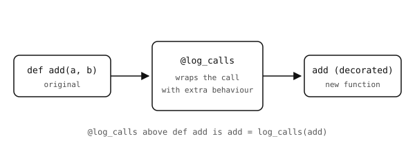

5.23. Decorators¶
A decorator is a piece of syntax that wraps a function (or a method) in another function. The wrapper can add behaviour before and after the original call, replace the return value, or attach metadata. The shape is:
@wrapper
def f():
...
The @wrapper line is equivalent to f = wrapper(f) – the
function f is built normally, then handed to wrapper, and
the result is rebound to the name f.

A decorator takes a function in and returns a new function.¶
5.23.1. Built-in method decorators¶
A few decorators ship with Python and are used inside class bodies.
5.23.1.1. @property¶
Turns a method into a computed attribute. The caller accesses it as if it were a plain attribute (no parentheses), but a method runs on each read:
class Circle:
def __init__(self, radius):
self.radius = radius
@property
def area(self):
return 3.14159 * self.radius * self.radius
c = Circle(5)
print(c.area) # 78.53975 -- no parentheses
Use it when an attribute that looks simple needs a tiny computation behind it. If the work is expensive, prefer a regular method – callers do not expect attribute reads to be slow.
5.23.1.2. @classmethod¶
Defines a method that receives the class as its first argument
instead of an instance. The first parameter is conventionally
named cls:
class Point:
def __init__(self, x, y):
self.x = x
self.y = y
@classmethod
def origin(cls):
return cls(0, 0)
p = Point.origin()
Class methods are the standard way to provide alternative constructors – factory functions that return an instance built in a non-default way.
5.23.1.3. @staticmethod¶
Defines a method that receives neither the instance nor the class – it is just a plain function that lives in the class namespace for organisational reasons:
class Temperature:
@staticmethod
def c_to_f(c):
return c * 9 / 5 + 32
Temperature.c_to_f(100) # 212.0
Use it sparingly; if a function really has nothing to do with the class’s state, a plain module-level function is usually cleaner.
5.23.2. Writing a custom decorator¶
A decorator is a function that takes a function and returns a function. The minimum shape:
def log_calls(func):
def wrapper(*args, **kwargs):
print("calling", func.__name__)
return func(*args, **kwargs)
return wrapper
@log_calls
def add(a, b):
return a + b
add(2, 3)
Output:
calling add
The wrapper closes over func and forwards everything to
it. *args / **kwargs lets it work on any function, not
just two-argument ones. This pattern is the foundation of more
elaborate decorators (timing, caching, retry-on-failure) but the
core is always the same: take a function in, return a function
out.